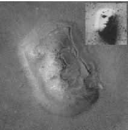

(engl. face on Mars). Viking 1 -luotain kuvasi Marsin pintaa vuosina 1976 ja 1977. Eräästä NASA:n julkaisemasta kuvasta löytyi muodostelma, joka näyttää kasvoilta suineen, silmineen ja sieraimineen.

Joidenkin mielestä muodostelma ei kuitenkaan ollut vain tavallinen kukkula, vaan avaruusolioiden tekemä rakennelma. Viranomaisten mukaan tämä ei missään nimessä pitänyt paikkaansa. NASA:a ja tiedemiehiä ei kuitenkaan uskottu, sillä heidän katsottiin haluavan peitellä totuutta omaksi hyödykseen.
Vuonna 1998 Mars Global Surveyor -luotain kuvasi samaa Cydonian aluetta, jota Viking 1 oli kuvannut kaksi vuosikymmentä aikaisemmin. Mars Observerin kuvat olivat kuitenkin huomattavasti tarkempia. Niiden avulla selvisi, että kyse oli todellakin vain tuulen syövyttämästä kukkulasta. Tämä luonnollisesti synnytti uuden salaliittoteorian: Mars Observer ei ainoastaan ottanut kuvia Marsin kasvoista viranomaisten omaan käyttöön, vaan myös tuhosi kasvot ydinpommilla.
Aikaisemmin Marsissa väitettiin olevan rakennettuja vesikanavia ja pyramideja, ja kuussa muun muassa siltoja ja suurten ajoneuvojen jälkiä. Kuvausten myötä nämäkin ovat osoittautuneet luonnon aiheuttamiksi muodostelmiksi, joissa innokkaat ihmiset ovat halunneet nähdä merkkejä älykkäästä elämästä. Inhimillinen kyky jäsentää täysin epämääräistä aineistoa merkitykselliseksi selittää senkin, miksi Marsin pinnalla on havaittu myös Kermit-sammakko, sydän sekä hymiön hymyilevät kasvot.
Katso: Ufo.
Kirjallisuutta: Gardner 1985; Häkkinen 1999a; Karttunen 1998; Kuure 1998; Morrison 1998; Posner 2000.